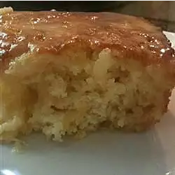

Pineapple Cake

Description
Very moist cake that is very good for a pot luck dinner.
Ingredients
- 2 cups all-purpose flour
- 1 teaspoon baking soda
- 2 eggs
- 1 and a half cups white sugar
- 1/2 teaspoon salt
- 1 (20 ounce) can crushed pineapple with juice
- 3/4 cup butter
- 1/2 cup white sugar
- 1/2 cup evaporated milk
- 1 teaspoon vanilla extract
Steps
- Preheat oven to 350 degrees F (175 degrees C).
- Lightly grease one 9x13 inch pan.
- Mix the flour, baking soda, salt, and 1 1/2 cups of the white sugar together.
- Stir in the beaten eggs and the pineapple with juice and mix well.
- Pour batter into prepared pan.
- Bake at 350 degrees F (175 degrees C) for 30 minutes.
- Pour Buttery Milk Syrup over top of cake while still warm.
- To Make Buttery Milk Syrup: In a sauce pan combine the butter or margarine, evaporated milk, vanilla, and 1/2 cup
white sugar.
- Bring mixture to a boil over medium high heat and cook for about 5 minutes.
- Pour over cake while still warm.